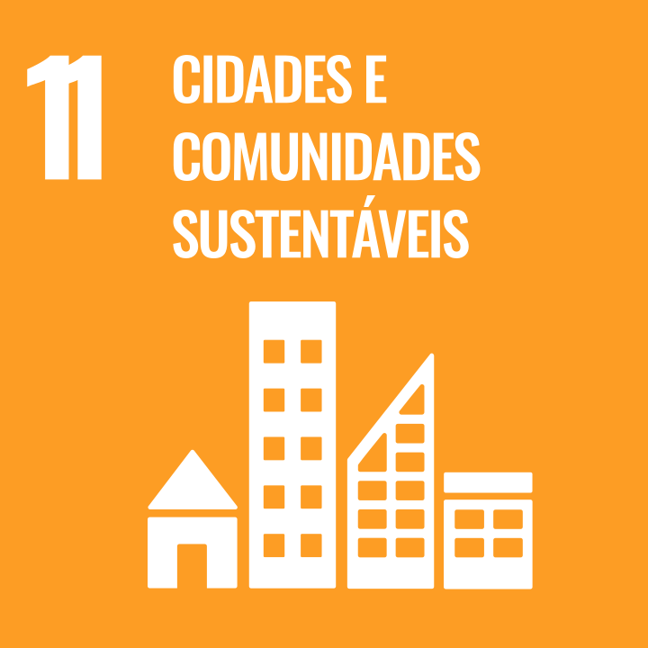
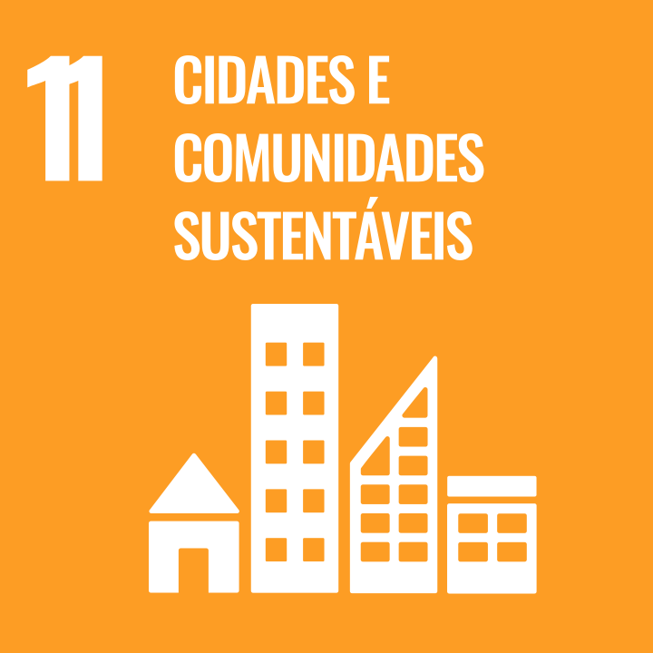

✂️ Artesanato Sustentável ✂️
O que é o Artesanato Sustentável?
É a prática de criar peças de arte e objetos utilizando materiais de baixo impacto ambiental, como os reciclados, reutilizados ou naturais, com o objetivo de reduzir o desperdício e a poluição.
O que queremos com nosso projeto?
O descarte incorreto de resíduos e a falta de oportunidades de geração de renda sustentável são desafios recorrentes em muitas comunidades. Nossa proposta busca promover a criatividade por meio da produção de artesanato com materiais recicláveis, oferecendo alternativas de renda e incentivando o desenvolvimento local.
Essa iniciativa está alinhada a cinco Objetivos de Desenvolvimento Sustentável (ODS):
- ODS 1: Erradicar a pobreza em todas as suas formas, ao contribuir para a geração de renda e melhores condições de vida;
- ODS 8: Promover o crescimento econômico sustentado, inclusivo e sustentável, com emprego pleno e trabalho decente para todos;
- ODS 11: Tornar as comunidades e cidades mais inclusivas, seguras, resilientes e sustentáveis;
- ODS 12: Garantir padrões de consumo e produção responsáveis;
- ODS 13: Adotar medidas urgentes para combater a mudança climática e seus impactos, reduzindo a poluição e incentivando práticas ambientalmente corretas.

 



Ao incentivar o uso consciente dos recursos, a redução de resíduos e a criação de produtos mais sustentáveis, buscamos não apenas preservar o meio ambiente, mas também gerar oportunidades de renda, inclusão social e combate à pobreza. Além disso, pretendemos conscientizar a população sobre materiais que muitas vezes seriam jogados fora, transformando-os em soluções criativas que fortalecem a economia local e contribuem para cidades mais justas, resilientes e sustentáveis.
Benefícios para o Meio Ambiente
O artesanato sustentável beneficia o meio ambiente ao reduzir o desperdício, utilizando materiais reciclados ou de baixo impacto e incentivando a economia circular. Ele também promove a conservação de recursos naturais, pois diminui a necessidade de novas matérias-primas virgens e evita a extração excessiva de materiais, além de incentivar a produção local.
{kind=link}
{kind=link}
{kind=link}
{kind=link}